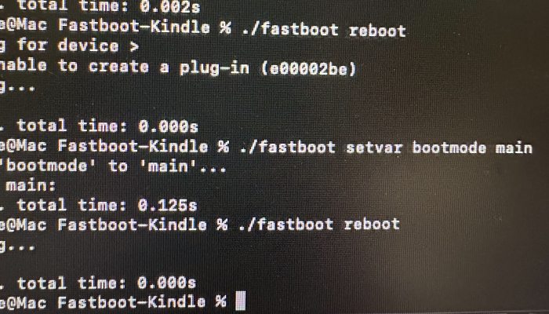
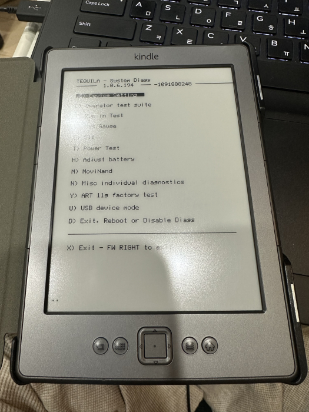
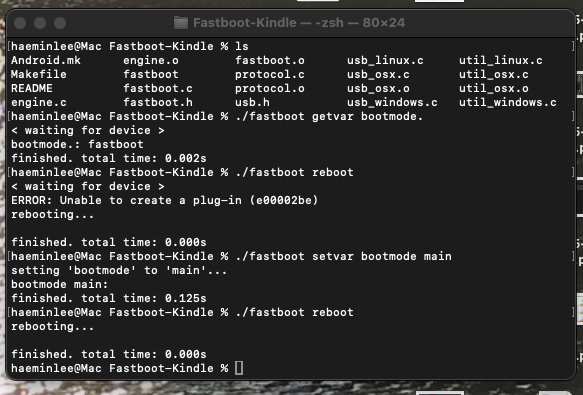
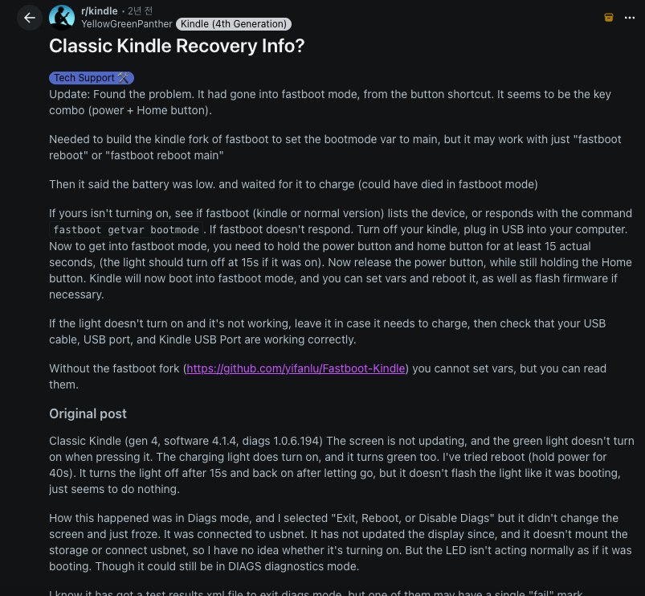
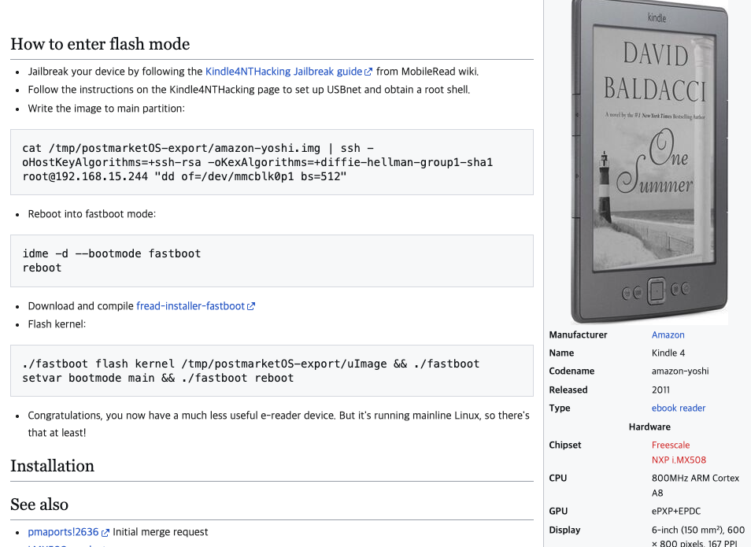

   최근 메루까리나 옥션에서 킨들4를 연속으로 몇개 줏었는데.. 그중에 하나를 만지다가 벽돌로 만들어버림-_- 증상은 diags 1.0.6.194모드에서 꿈쩍도안함 생각보다 비슷한 증상인사람들은 있는거같은데 딱히 어떻게 고쳤다라는 정보는 찾기어려움. 흔히하는방법인 전원버튼 40초누르기, 전원+홈버튼 20초 누르기 기타등등.. 꿈쩍도안해서 이것저것 검색하다가 이거결국 시리얼포트로 가야하나하고 뒷판도 뜯었지만 귀찮.. 아서 다시 검색해보다가 이상하게 해결됨.. 다시 벽돌만들었을때 참고하려고 매모남김. https://github.com/yifanlu/Fastboot-Kindle 이걸 설치한다. 맥터미널에서 설치: git clone https://github.com/yifanlu/Fastboot-Kindle.git cd Fastboot-Kindle 여기서 main으로 설치하면 에러가 날것임 fastboot.c를 열어서 fb_queue_check(argv[1]); 를 // fb_queue_check(argv[1]); // 최신 AOSP에서 삭제된 함수 이렇게? 주석처리한다 ./fastboot reboot 이걸로 보통은 해결이 될텐데 나는 아무런 반응이 없어서 ./fastboot setvar bootmode main 이렇게 부팅모드를 메인으로 설정후 다시 리붓하니 재부팅됨.. 리붓을해도 diags화면으로 리붓하는 루프에 빠져서 반응이 없었던거같다. -_- 이외 참고한 페이지: https://www.reddit.com/r/kindle/comments/15p57f6/classic_kindle_recovery_info/  https://wiki.postmarketos.org/wiki/Amazon_Kindle_4_(amazon-yoshi) 